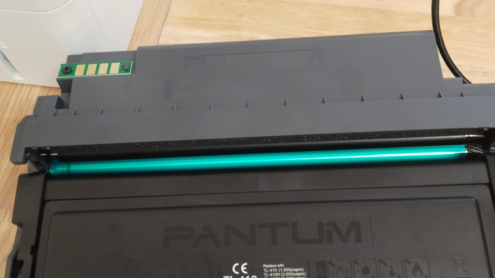

Bao lâu nên nạp mực máy in một lần?
Câu trả lời đúng không phải "ba tháng" hay "sáu tháng" mà là theo số trang. Và có một nghịch lý: máy in ít lại hay hỏng hơn máy in nhiều.

Tính theo dung lượng hộp mực
Mỗi mã hộp mực có dung lượng danh định: HP 12A khoảng 2.000 trang, 85A khoảng 1.600 trang, W1106A khoảng 1.000 trang, Brother TN-2385 khoảng 3.000 trang, Ricoh MP2014 khoảng 12.000 trang.
Con số đó tính với bản in phủ 5% mặt giấy — tức văn bản chữ thường. Nếu anh/chị in bảng biểu có viền đậm, hoá đơn có logo lớn hay ảnh, mực hết nhanh hơn, có khi chỉ còn một nửa.
Cách theo dõi đơn giản nhất: đa số máy in có mục đếm số trang trong phần cài đặt hoặc in được trang cấu hình. Biết số trang là biết còn bao lâu, không phải đoán.
Vì sao máy in ít lại hay hỏng hơn
Mực laser là bột rất mịn. Khi máy in đều, bột được đảo liên tục và trục từ luôn có lớp mực mỏng phủ lên. Khi máy nằm nhiều tuần không in, bột lắng xuống và vón lại, còn trục từ bị chai bề mặt.
Kết quả là hộp mực còn đầy nhưng bản in trắng hoặc rất mờ — và khách tưởng hết mực. Thực tế chỉ cần vệ sinh hộp và nạp lại, không phải thay gì.
Với máy phun mực hệ bình như Epson L-series thì nghiêm trọng hơn: để lâu không in là mực khô ngay trong đầu phun, gây sọc ngang hoặc mất màu. Thông đầu phun tốn 100.000 – 250.000đ, trong khi chỉ cần in vài trang mỗi tuần là tránh được.
Mốc thực tế theo kiểu dùng
- Hộ gia đình, in dưới 50 trang mỗi tháng: in ít nhất 3–5 trang mỗi tuần để mực không khô. Nạp mực khi bản in nhạt, thường 1–2 lần mỗi năm.
- Văn phòng nhỏ, 300–800 trang mỗi tháng: nạp khoảng 3–4 tháng một lần. Đây là nhóm dùng máy đúng cách nhất, ít hỏng nhất.
- Cửa hàng, hộ kinh doanh, trên 1.500 trang mỗi tháng: nạp mỗi 1–2 tháng. Nên dùng hộp dung tích cao và giữ một hộp dự phòng đã nạp sẵn để không dừng việc.
- Xưởng, kho nhiều bụi: nạp theo chu kỳ như trên nhưng thêm vệ sinh buồng mực mỗi quý, kể cả khi mực chưa hết.
Cần kỹ thuật xem trực tiếp?
Gọi 0986 704 260. Kỹ thuật xem máy rồi báo giá, anh/chị đồng ý thì mới làm.
Bài liên quan
Đặt nạp mực hoặc sửa máy in
Khu Nam TP.HCM — xem máy rồi báo giá, bảo hành theo số trang in.